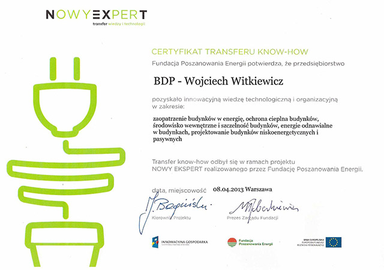

Chcesz się dowiedzieć więcej?
Zadzwoń: 790 210 215
Chcesz się dowiedzieć więcej?
Zadzwoń: 790 210 215
Firma Buduję Domy Pasywne, od listopada 2012 do kwietnia 2013 roku brała udział w innowacyjnym projekcie NOWY EKSPERT finansowanym ze środków UE.
W ramach projektu dokonano transferu nowoczesnych technologii w następującym zakresie:
Projekt NOWY EKSPERT realizowany jest w ramach Programu Operacyjnego Innowacyjna Gospodarka Działanie 5.2. „Wspieranie instytucji otoczenia biznesu świadczących usługi proinnowacyjne oraz ich sieci o znaczeniu ponadregionalnym”.
Celem projektu jest opracowanie, wdrożenie i świadczenie przez Fundację Poszanowania Energii zakresu usług proinnowacyjnych dla firm z całego kraju w dziedzinie problemów energooszczędności w projektowanych, budowanych i użytkowanych budynkach.Grupę odbiorców stanowią przedsiębiorcy prowadzący działalność usługową w jednym z trzech obszarów związanych z zapewnianiem efektywności energetycznej budynków:
Więcej na temat programu: www.nowyekspert.pl
Projekt współfinansowany przez Unię Europejską ze środków Europejskiego Funduszu Rozwoju Regionalnego
